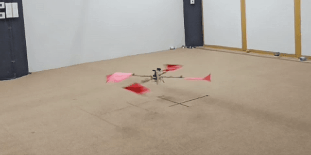

2023 – 2026
Thesis
A quadrotor that spins on purpose. Treating the whole vehicle as one large, controlled propeller lets it draw on the efficiency of larger rotors, and aims at fault-tolerant flight at a lower spin rate.
- ICUAS 2026 Best Paper Finalist
- Wings carry 22% of the weight in hover
- Controlled hover at ~15 rad/s on hardware
